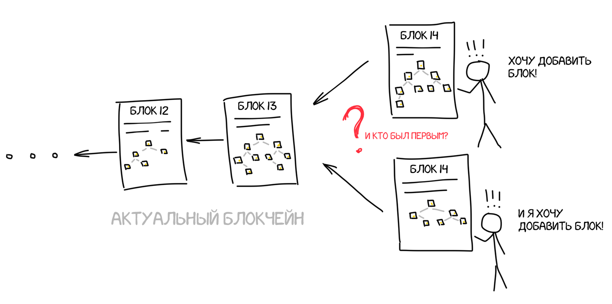

А вот и нет. В сети одновременно работают тысячи компьютеров, и как только они соберут новый блок, они почти одновременно ринутся сообщать всем, что их блок был создан первым. А из предыдущего раздела мы уже знаем, что в децентрализованной сети невозможно доказать кто действительно был первым.
Поэтому для включения блока в цепочку компьютеры должны решить какую-то сложную задачку, которая займет у них определенное время.
Но если для человека сложная задача — это спланировать отпуск, чтобы и на майские праздники попал, и билеты на море недорого, то для компьютера — это добавить в конец блока такое число (nonce), чтобы в результате хеш SHA-256 для всего блока начинался, скажем, на 10 нулей. Это и есть та задача, которую надо решить, чтобы добавить блок в сеть Bitcoin. Для других сетей задачи могут отличаться.
Так мы приходим к понятию майнинга, на котором все так помешаны в последние годы.